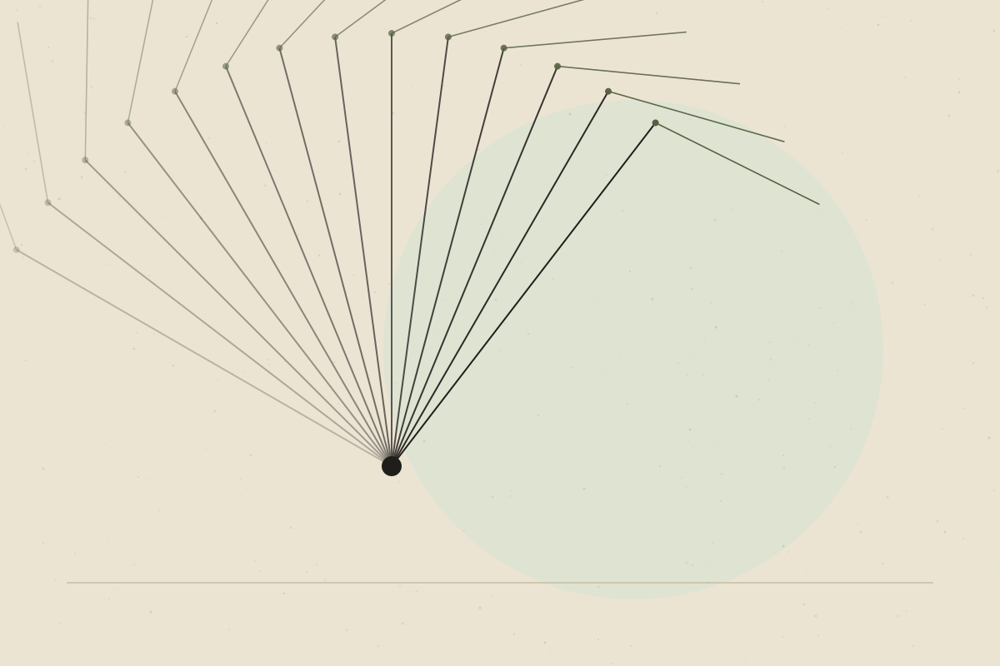

Why Strength Training Matters Beyond Building Muscle
Bones, metabolism, independence and mood — the wider case for lifting things up and putting them down.

For many people, strength training brings to mind gyms, heavy weights and bodybuilding. That image can make it feel irrelevant to anyone who isn’t interested in building visible muscle. Yet the reasons to train strength go well beyond appearance — and apply to almost everyone.
What counts as strength training
Strength (or resistance) training means working muscles against a load: free weights, machines, resistance bands, or your own body weight. Squatting to a chair, carrying shopping and climbing stairs with intent all sit on the same spectrum.
Well supportedMajor public health guidelines, including those from the World Health Organization, recommend muscle-strengthening activities on two or more days a week for adults, alongside aerobic activity. [Check the current guideline wording before publishing.]
Bone health
Well supportedBone responds to mechanical loading. Resistance and impact-type exercise can help maintain bone density, which is particularly relevant as people age and for women after menopause.
Programmes for people with low bone density should be tailored, ideally with guidance from a qualified professional.
Metabolic health
Well supportedSkeletal muscle is a major site of glucose uptake. Strength training can improve insulin sensitivity and blood glucose control, including in people with type 2 diabetes.
Ageing and independence
Muscle mass and strength tend to decline with age, and the loss of strength can affect everyday tasks such as rising from a chair or climbing stairs.
Well supportedOlder adults can increase strength with appropriate training, and this can support physical function and may reduce the risk of falls when combined with balance training.
Mental health and wellbeing
Emerging / mixedResistance training has been associated with improvements in symptoms of depression and anxiety in some studies. These findings are encouraging, but study quality varies and it is not a replacement for mental health care.
Tendons, joints and pain
Progressive loading is a core part of rehabilitation for many musculoskeletal conditions, because tissues such as tendon adapt to the demands placed on them over time.
Emerging / mixedStrength-based exercise is commonly used to manage conditions such as some tendon problems and knee osteoarthritis. Which type of exercise works best for whom remains an area of active research.
Getting started sensibly
- Begin with movements you can control, and progress gradually.
- Some muscle soreness after new exercise is common; sharp or worsening pain is a reason to stop and seek advice.
- Consistency over months tends to matter more than intensity in any single session.
- If you have a medical condition, are pregnant, or are returning after injury, get individual advice first.
The bottom line
Strength training supports far more than muscle size. Its benefits for bones, metabolism and long-term independence make it one of the most broadly useful forms of exercise — at any age, and at any starting point.
References & further reading
References below are placeholders. Each must be replaced with a verified source before publication.
- [Reference placeholder] — add a verified source on: WHO Guidelines on Physical Activity and Sedentary Behaviour (verify year and wording). Include authors, year, title, journal and DOI or link.
- [Reference placeholder] — add a verified source on: resistance training and bone mineral density. Include authors, year, title, journal and DOI or link.
- [Reference placeholder] — add a verified source on: resistance training and glycaemic control. Include authors, year, title, journal and DOI or link.
- [Reference placeholder] — add a verified source on: strength training in older adults and physical function. Include authors, year, title, journal and DOI or link.
- [Reference placeholder] — add a verified source on: resistance training and depressive symptoms (meta-analysis). Include authors, year, title, journal and DOI or link.